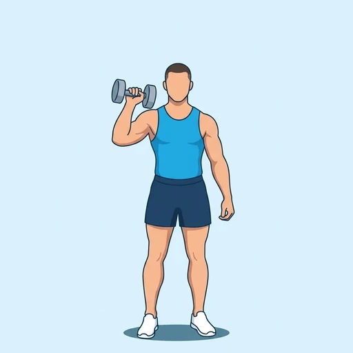
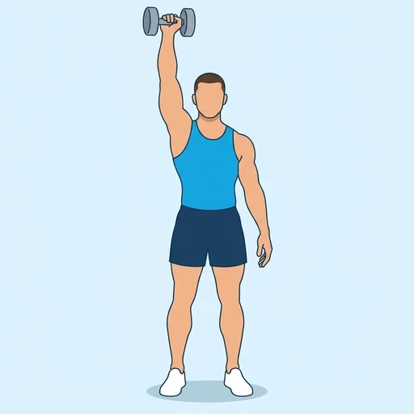

One Arm Dumbbell Shoulder Press
A standing overhead press performed with a single dumbbell. Working one side at a time loads the shoulder and triceps and makes the trunk resist leaning toward the empty hand.
Shoulders · Dumbbell · Intermediate


Muscles worked by the One Arm Dumbbell Shoulder Press
Primary
Secondary
Also called: front deltoid, anterior delt, front delt, anterior deltoid, tricep, triceps.
Equipment
Also called: db, dumbell, hex dumbbell, rubber dumbbell, hand weight.
How to do the One Arm Dumbbell Shoulder Press
- Stand with the feet hip-width apart and hold a dumbbell at one shoulder with the palm facing forward.
- Brace the abdominals and keep the free arm relaxed at your side.
- Press the dumbbell straight overhead until the arm is fully extended.
- Pause briefly at the top with the upper arm next to the ear.
- Lower the dumbbell back to the shoulder under control.
- Complete the repetitions on one arm, then switch sides.
Form tips
- Keep the ribs down and the glutes tight; do not lean sideways to push the weight up.
- Press in a straight line close to the head, not out in front.
- Start lighter than you would with two dumbbells; the trunk has to stabilise the load.
At a glance
| Body part | Shoulders |
|---|---|
| Category | Strength |
| Force type | Push |
| Mechanic | Compound |
| Difficulty | Intermediate |
| Equipment | Dumbbell |
| Goals | Hypertrophy, Strength |
| Tags | Knee safe, Lower back safe, No axial load |
| MET | 6.0 (metabolic equivalent, for calorie estimates) |
| Unilateral | Yes |
| Bodyweight | No |
| Dataset id | one-arm-dumbbell-shoulder-press |
One Arm Dumbbell Shoulder Press in German & Spanish
| German | Einarmiges Kurzhantel-Schulterdrücken |
|---|---|
| Spanish | Press de Hombros con Mancuerna a Un Brazo |
Descriptions, instructions and tips ship in all three languages in the JSON.
Related exercises
Exercise data (JSON)
The record below is exactly what exercises.json ships for this exercise — names, descriptions, instructions and tips in English, German and Spanish.
{
"id": "one-arm-dumbbell-shoulder-press",
"name_en": "One Arm Dumbbell Shoulder Press",
"name_de": "Einarmiges Kurzhantel-Schulterdrücken",
"name_es": "Press de Hombros con Mancuerna a Un Brazo",
"description_en": "A standing overhead press performed with a single dumbbell. Working one side at a time loads the shoulder and triceps and makes the trunk resist leaning toward the empty hand.",
"description_de": "Ein stehendes Überkopfdrücken mit einer einzelnen Kurzhantel. Die einseitige Arbeit belastet Schulter und Trizeps und zwingt den Rumpf, dem Neigen zur leeren Hand entgegenzuwirken.",
"description_es": "Un press por encima de la cabeza de pie con una sola mancuerna. Trabajar un lado cada vez carga el hombro y el tríceps y obliga al tronco a resistir la inclinación hacia la mano vacía.",
"category": "strength",
"force_type": "push",
"mechanic": "compound",
"difficulty": "intermediate",
"equipment": "dumbbell",
"body_part": "shoulders",
"primary_muscles": [
"anterior_deltoid",
"triceps_brachii"
],
"secondary_muscles": [
"lateral_deltoid",
"obliques",
"serratus_anterior",
"trapezius"
],
"goals": [
"hypertrophy",
"strength"
],
"tags": [
"knee_safe",
"lower_back_safe",
"no_axial_load"
],
"variation_group": "overhead-press",
"is_unilateral": true,
"is_bodyweight": false,
"instructions_en": [
"Stand with the feet hip-width apart and hold a dumbbell at one shoulder with the palm facing forward.",
"Brace the abdominals and keep the free arm relaxed at your side.",
"Press the dumbbell straight overhead until the arm is fully extended.",
"Pause briefly at the top with the upper arm next to the ear.",
"Lower the dumbbell back to the shoulder under control.",
"Complete the repetitions on one arm, then switch sides."
],
"instructions_de": [
"Steh hüftbreit und halte eine Kurzhantel an einer Schulter, die Handfläche nach vorn.",
"Spann die Bauchmuskeln an und lass den freien Arm entspannt an der Seite hängen.",
"Drück die Kurzhantel gerade über den Kopf, bis der Arm vollständig gestreckt ist.",
"Halte oben kurz inne, der Oberarm neben dem Ohr.",
"Senke die Kurzhantel kontrolliert zurück zur Schulter.",
"Führe alle Wiederholungen mit einem Arm aus und wechsle dann die Seite."
],
"instructions_es": [
"Colócate de pie con los pies a la anchura de las caderas y sujeta una mancuerna a la altura de un hombro con la palma hacia delante.",
"Contrae el abdomen y deja el brazo libre relajado a un lado.",
"Empuja la mancuerna en vertical por encima de la cabeza hasta extender del todo el brazo.",
"Haz una breve pausa arriba con la parte superior del brazo junto a la oreja.",
"Baja la mancuerna de nuevo al hombro de forma controlada.",
"Completa las repeticiones con un brazo y luego cambia de lado."
],
"tips_en": [
"Keep the ribs down and the glutes tight; do not lean sideways to push the weight up.",
"Press in a straight line close to the head, not out in front.",
"Start lighter than you would with two dumbbells; the trunk has to stabilise the load."
],
"tips_de": [
"Halte die Rippen unten und das Gesäß fest; lehn dich nicht zur Seite, um das Gewicht hochzudrücken.",
"Drück in einer geraden Linie dicht am Kopf vorbei, nicht weit vor dem Körper.",
"Beginne leichter, als du es mit zwei Kurzhanteln tun würdest; der Rumpf muss die Last stabilisieren."
],
"tips_es": [
"Mantén las costillas abajo y los glúteos apretados; no te inclines hacia un lado para subir el peso.",
"Empuja en línea recta y cerca de la cabeza, no hacia delante.",
"Empieza con menos peso que con dos mancuernas; el tronco tiene que estabilizar la carga."
],
"met": 6.0,
"images": {
"flat": {
"start": "images/flat/one-arm-dumbbell-shoulder-press-start.webp",
"peak": "images/flat/one-arm-dumbbell-shoulder-press-peak.webp"
}
}
}Fetch just this exercise
const { exercises } = await fetch(
"https://exercise-dataset.com/exercises.json"
).then(r => r.json());
const ex = exercises.find(e => e.id === "one-arm-dumbbell-shoulder-press");Free for personal and commercial in-app use with attribution (“Exercise data by RepDB”) — see the license and ready-made attribution snippets. Redistributing the data as a dataset or API is not permitted.